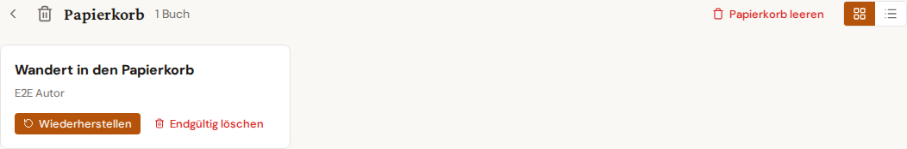

Papierkorb und Wiederherstellung¶
Gelöschte Bücher und Artikel landen zunächst im Papierkorb und bleiben dort 90 Tage erhalten, bevor sie automatisch endgültig gelöscht werden. Innerhalb dieser Zeit lassen sie sich jederzeit wiederherstellen.

Öffnen¶
Im Bücher- bzw. Artikel-Dashboard öffnet das Papierkorb-Symbol in der oberen rechten Ecke die Papierkorb-Ansicht. Ein kleiner Zähler-Badge zeigt, wie viele Einträge gerade im Papierkorb liegen.
Aktionen¶
- Wiederherstellen — bewegt den Eintrag zurück ins Dashboard. Sofortige Aktion; kein Bestätigungsdialog.
- Endgültig löschen — entfernt den Eintrag unwiderruflich (Bestätigung erforderlich).
- Papierkorb leeren — löscht alle Einträge im Papierkorb auf einmal endgültig.
Massen-Wiederherstellung¶
Beim Soft-Delete einer ganzen Auswahl zeigt das Dashboard direkt einen Rückgängig-Toast. Ein Klick darauf stellt den gesamten Satz in einem einzigen API-Aufruf wieder her (Single-Round-Trip). Ist der Toast bereits weggeklickt, lässt sich die Auswahl auch nachträglich im Papierkorb mit "Auswahl wiederherstellen" zurückholen.
Auto-Löschung¶
Das 90-Tage-Limit lässt sich in Einstellungen → Verhalten ändern (1 bis 365 Tage) oder ganz abschalten. Ohne Auto-Löschung wachsen Papierkorb-Inhalte unbegrenzt — sinnvoll z. B. für Recherche-Projekte, die selten endgültig wegfallen.